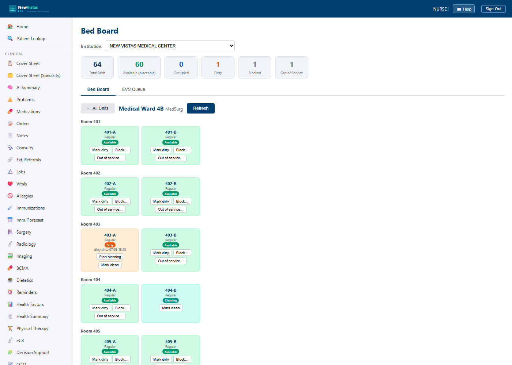

Bed Board — units, beds & EVS turnover
The Bed Board (/beds) is the live picture of every inpatient bed in
an institution: which are placeable, which are occupied, and which are mid-turnover.
Each unit owns its rooms and beds, so the counts you see are a projection of the
truth — there is no separate board to keep in sync. Bed management is gated by the
BED_MANAGEMENT feature flag; EVS and structural actions require the
DG BED CONTROL security key (a nurse's ORELSE also
satisfies the clean/dirty flips).
Open the board
- In the sidebar, under Inpatient, click Bed Board (or go to
/beds). - Confirm the Institution picker — it defaults to your acting institution. Switch it to view another hospital's board.
- Read the stats strip, then the unit cards below the Bed Board tab.

Read the capacity, honestly
The stats strip shows Total Beds, Available (placeable), Occupied, Dirty, Blocked, and Out of Service for the whole institution. Only Available beds are placeable — a dirty, blocked, reserved, or out-of-service bed is empty but you cannot put a patient in it. Each unit card repeats the breakdown in color: available (green), occupied (blue), reserved (amber), dirty (orange), cleaning (teal), blocked / out-of-service (gray), and boarders (purple).
Drill into a unit
- Click a unit card (e.g. MED-4B) to open its board.
- Beds are grouped by room when the unit models rooms; a unit with no rooms (a small clinic) shows a flat list of beds.
- Each bed is a colored card with its id, type, state badge, and — when occupied — the patient, attending, and any isolation precautions.
- Click ← All Units to return to the capacity overview.

EVS turnover
When a patient leaves a bed it goes to Dirty automatically — never straight back to Available. Environmental Services turns it over:
- On a Dirty bed, click Start cleaning → it becomes Cleaning.
- Click Mark clean → it becomes Available and is placeable again.
- Mark clean works straight from Dirty too, so a small site can turn a bed in one click.
- Use Mark dirty on an Available bed for a spill or contamination between patients.
Block & out-of-service
- Block… holds a bed for an administrative reason (staffing, isolation buffer). A reason is required; Unblock returns it to Available.
- Out of service… takes a bed down for maintenance. Return to service moves it to Dirty — physical work happened, so it must be cleaned before it's placeable.
- You cannot block or take an Occupied or Reserved bed out of service — release the patient or clear the reservation first. The system rejects the illegal move with a clear message.